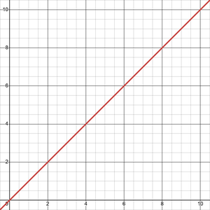
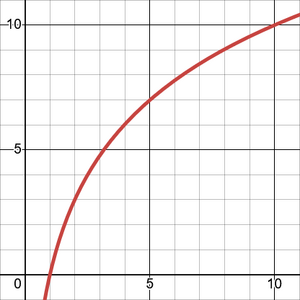
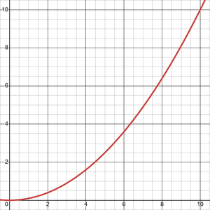

Stack Types（叠加类型）
升级中常用的叠加类型主要有三种，如下所示。
Linear

“y=x”的线性图“Linear”叠加类型表示你获得多少个同名升级，都不会出现收益衰减。
Hyperbolic

“y=10log(x)”的双曲图当你获得更多同名升级时，它最终会开始提供更少的收益。
Exponential

“y=0.1x^2”的指数图指数型升级在你获得更多同名升级之前收益不会很高，但数量堆起来后强度会迅速飙升。